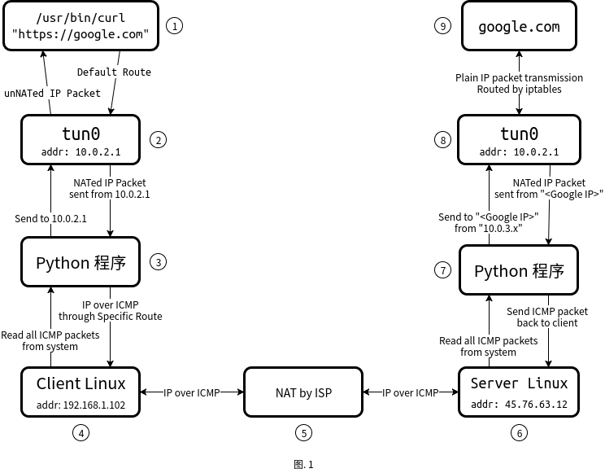
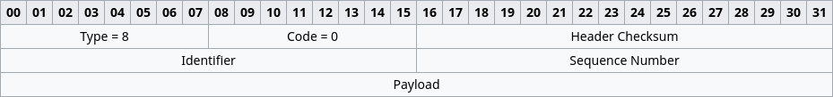

Preface
经过一段时间的学习和研究，总算是把 ICMP Tunnel 的理论知识了解个大概了。
研究这项技术期间，出现次数对多的问题大概就是下面这几个：
- 包从哪里来的?
- 包去哪儿了?
- Tunnel 的另一端是谁?
答：操作系统，由操作系统进行包转发，就算设置了 tunnel 的对等端（Peer-to-Peer）也得由操作系统进行转发。于是 前两个问题基本上解决了。
本文包含如下内容:
ICMP Tunnel 的基本技术细节, 包括但不限于 IP包、路由、iptables、Python 代码.
The ICMP Tunnel
首先贴一张图，这张图展示了IP包从客户端到服务器再到客户端的过程。

| 名词 | 解释 |
|---|---|
| tun0 | Tunnel 设备的名称 |
| Python 程序 | 负责读写 tun0 的数据以及读写 Internet 上的 ICMP 包 |
下面将逐步讲解 IP 包的具体流向。
1 ⇆ 2: 默认路由所有包到 tun0
Linux 下使用如下命令 将整个系统的 IP 包都导向 tun0 设备:
1 | sudo route del default # 删除默认路由 |
反之，tun0 会自动把 Python 程序 写进来的包自动转发到对应的程序.
2 ⇆ 3: tun0 NAT IP 包 / Python 程序 读写 tun0 的 IP 包
Wireshark 抓一下 tun0 的包，发现全部是来自 10.0.2.1 的包。也就是说：
tun0会对进入 tunnel 的包进行 NAT，导致Python 程序读出来的包全是来自10.0.2.1的包- 因为上一条，所以
Python 程序将目标地址为10.0.2.1的 IP 包写入tun0，就会被tun0自动将NAT后的地址转换回NAT之前的地址，然后再由操作系统把数据包调配到指定的地点。
Python 程序 读写 tun0 的数据时候要注意:
- 每次读取数据的长度应该是
tun0的 MTU, 这样的话, 每读一次就是一个 IP 包. - 向
tun0写 IP 包的时候，IP 包的来源地址必须是tun0的addr - 不管是由操作系统路由到
tun0的包 还是 由Python 程序写入的数据包, 必须小于等于tun0的 MTU, 否则会被分包.
3 ⇆ 4: 特定静态路由 / IP over ICMP
用特定路由让包出站
既然整个系统的包都被默认路由截获了，那 Python 程序 想发送 ICMP 包到 Server Linux 怎么办?
Linux 下使用如下命令 允许到特定地址的包使用特定的路由:
1 | # 所有去往 45.76.63.12 的包都将通过 wlan0 设备发往网关 192.168.1.1 |
使用 Payload 传输实际数据
这是 ICMP echo-request 的 header:

最后一个 Payload 字段是可以存放任何数据的，长度的话 理论上 ICMP 包外的 IP 包长度不超过 MTU 即可，但是实际上传不了那么大。
Python 读写某个 interface（或者说 网卡）上的 ICMP 包
1 | import socket |
4 ⇆ 5 & ⇆ 6: ICMP 包穿透 NAT
NAT 对 ICMP 包的映射
NAT 想要进行准确无误的地址转换和 IP 包转发，可以通过下面这5个信息来确定两个对等端（Peer-to-Peer）:
- 源 IP 地址
- 源端口号
- 通信协议
- 目的地 IP 地址
- 目的地端口号
TCP 和 UDP 协议都有端口号信息，ICMP 也有类似的信息 叫做 Identifier，参考下图里的 Identifier 字段.
ICMP Keepalive
客户端通过发送一个 ICMP 包到服务器 可以在 NAT 上创建一条 NAT 记录，但这个记录是有时效的。为了维持这个时效，需要客户端向服务器（也可能同时需要服务器向客户端）定时或不定时发送 Keepalive 包。
6 ⇆ 7: 读写服务器上的网卡上的 ICMP 包
参考 3 ⇆ 4: 特定静态路由 / IP over ICMP, 大致思路和原理都是一样的, 但不需要默认路由 也不需要特定路由。
7 ⇆ 8: 服务器端的 tunnel 读写
直接取出 ICMP 包的 Payload 然后写入 tun0 即可，但可能需要注意一下:
- 如果客户端的
tun0和服务器的tun0的addr不一样的话, 可能需要进行 IP 包的源地址进行转换, 要不然包可能发得出去但收不到对应的响应 IP 包(比如TCP, 发出去个 SYN, 很有可能收不到 SYN ACK, 因为tun0地址不同导致系统没法把不是10.0.2.1的包路由到tun0里).
8 ⇆ 9: tunnel 与实际目的交互
Linux 下执行如下命令来打开 IP 包转发:
1 | # 告诉 Linux kernel 开启 IP 包转发. |
然后无脑的读写 tun0 就能正常的与 Internet 上的主机进行通信了.
GitHub Project
在 GitHub 上挖了个坑，也不知道什么时候能填完，并且在写这篇 Blog 的时候我几乎不会 Python。感兴趣的话可以到 GitHub 上贡献代码或开个 Issue 之类的。
python-icmp-tunnel - A Python implementation of ICMP Tunnel - github.com
更新历史
3 Jun 2017:
- 首次发布
- 添加：引用文章 Linux Tunnel Device and Route
- 小修小改